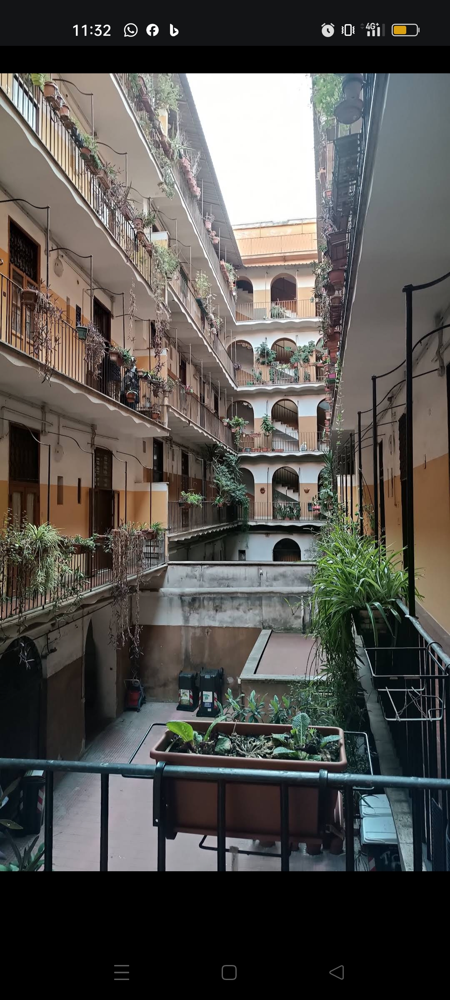
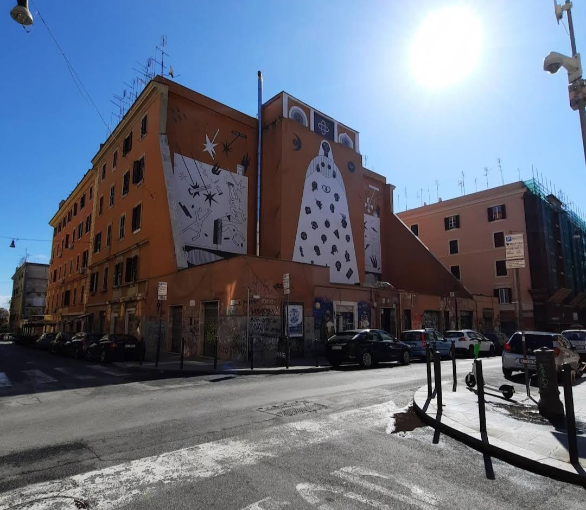

Roma, 15 Ottobre 2023 Roma, 20 ottobre 2023 - Un'atmosfera da film horror ha invaso il quartiere San Lorenzo, dove la polizia ha fatto una macabra scoperta in un appartamento popolare. Il cadavere sfigurato di una prostituta è emerso, facendo temere l'opera di un serial killer che potrebbe aver già mietuto altre vittime nella zona, da tempo segnalata per misteriose scomparse. La comunità locale era stata in precedenza inquieta e aveva più volte segnalato le anomalie alla polizia, ma senza ottenere risposte o azioni immediate. La drammatica scoperta è stata fatta da un vicino del luogo, stanco dei rumori molesti provenienti dall'abitazione della giovane donna. Ha notato la porta socchiusa e un odore nauseabondo provenire dall'interno. Deciso a fare chiarezza, ha varcato la soglia e si è trovato davanti a una scena raccapricciante: il sangue versato ovunque e il corpo martoriato della vittima, identificata come Samantha Vetlovich, una donna slava di 34 anni. La polizia ha prontamente avviato le indagini ed ha già dei sospettati, sebbene abbia scelto di mantenere riservati i dettagli del caso, in parte per rispetto della vittima e in parte per non compromettere l'indagine in corso. Alcuni sospettano che il killer possa essersi ispirato al famoso film "Seven", in cui un assassino seleziona le sue vittime in base ai sette peccati capitali. Nel quartiere San Lorenzo, l'angoscia e la paura si diffondono a macchia d'olio, mentre le autorità promettono di fare luce sull'orrendo crimine e di portare davanti alla giustizia il colpevole o i colpevoli di questa terribile atrocità.
 